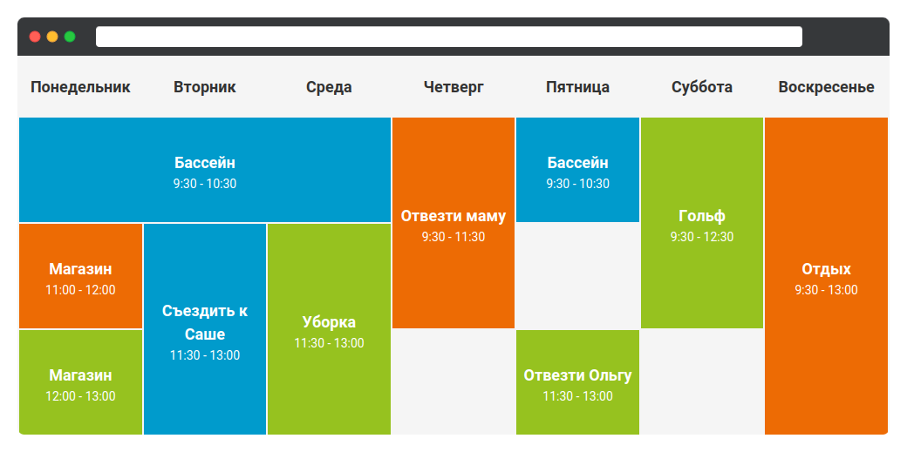

Создайте таблицу списка дел. Пользователь внёс в неё информацию и ему хочется наглядно видеть, какие дела ему нужно совершить в каждый из дней.

Список дел
Понедельник
- Бассейн — 9:30 - 10:30
- Магазин — 11:00 - 12:00
- Магазин — 12:00 - 13:00
Вторник
- Бассейн — 9:30 - 10:30
- Съездить к Саше — 11:30 - 13:00
Среда
- Бассейн — 9:30 - 10:30
- Уборка — 11:30 - 13:00
Четверг
- Отвезти маму — 9:30 - 11:30
Пятница
- Бассейн — 9:30 - 10:30
- Отвезти Ольгу — 11:30 - 13:00
Суббота
- Гольф — 9:30 - 12:30
Воскресенье
- Отдых — 9:30 - 13:00
Все необходимые стили уже находятся внутри app.css. Необходимо сверстать только саму таблицу и, используя нужные классы и атрибуты, стилизовать её. Внимательно присмотритесь к тому, сколько места занимает каждая из ячеек.
Доступные классы:
.todo-name— название дела в ячейке. Используйте тег<p>.todo-time— время. Используйте тег<p>.bg-blue,.bg-orange,.bg-green— доступные цвета ячеек.